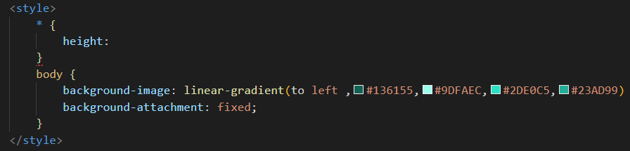
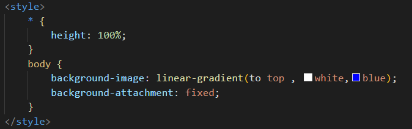

Fazendo um Degradê de cores CSS
- Para usarmos cores e fazermos um degradê, utilizamos a tag STYLE na parte de cima do código abaixo de title e dentro da tag Style digitamos body e entre parenteser, usamos o background-image: linear-gradient depois isso selecionamos o formato do degradê, da esquerda para direita colocamos to right da direita para esquerda to left para cima to top e para baixo to bottom
- Outro ponto importante, podemos apenas inserir o código da cor que queremos e quantas cores quizermos inserir dentro do background-image: linear-gradient para ir alternando o degradê, como no exemplo abaixo

- Quando usamos o to top, o site fica com uma configuração visualmente ruim, para isso usamos uma configuraçao global do CSS (height:100%) e inserimos na parte de cima, conforme print abaixo. Não podemos esquecer do * para iniciar. Além disso inserimos a tag background-attachment: fixed para o site não ficar em degradê em várias partes, ele unifica o degradê
"